Docker¶
Introduction and container forensics¶
Docker is a software platform that allows developers to create, test, and deploy applications quickly and easily using containers. It is a technology that has gained significant popularity in recent years, especially in the field of information technology.
Docker is used to encapsulate applications inside containers, meaning that each application runs in its own isolated environment. This allows developers to ensure that their applications behave consistently across different environments, regardless of hardware or software differences.
The main advantage of using Docker is the ability to create identical development and production environments, which helps guarantee the quality and consistency of applications. In addition, Docker enables continuous integration and continuous deployment, allowing developers to rapidly deploy new versions of their applications without interrupting the existing service.
Another advantage of Docker is that containers are extremely lightweight and fast to create. Containers can be started and stopped within seconds, allowing developers to test and debug applications much faster than in traditional environments.
However, there are also some disadvantages to using Docker. One of the main issues is the complexity of the platform. Docker can be difficult to learn and configure, especially for those without previous experience managing containers.
Another issue is that Docker can be slower than traditional environments in certain situations. Containers require an additional virtualization layer, which may impact performance in highly demanding environments.
Finally, another challenge when using Docker is that the technology is still evolving. As new features are added and existing capabilities are improved, it can be difficult to keep up with the changes.
Objectives¶
Learn how to perform basic operations with containers.
Extract evidence from infrastructure systems that provide microservices through containers.
Materials¶
Any Linux distribution.
Docker CE.
Forensic tools:
Docker Forensics Toolkit
Sysdig
docker-diff
docker-explorer
PART A: Introduction to Docker¶
Perform the following tasks:
1. Install Docker on a Linux distribution¶
curl -fsSL https://get.docker.com -o get-docker.sh
sudo sh get-docker.sh
2. Run a Docker command that displays the installed version¶
docker version

3. Run a Docker command that shows information about the host system¶
docker info
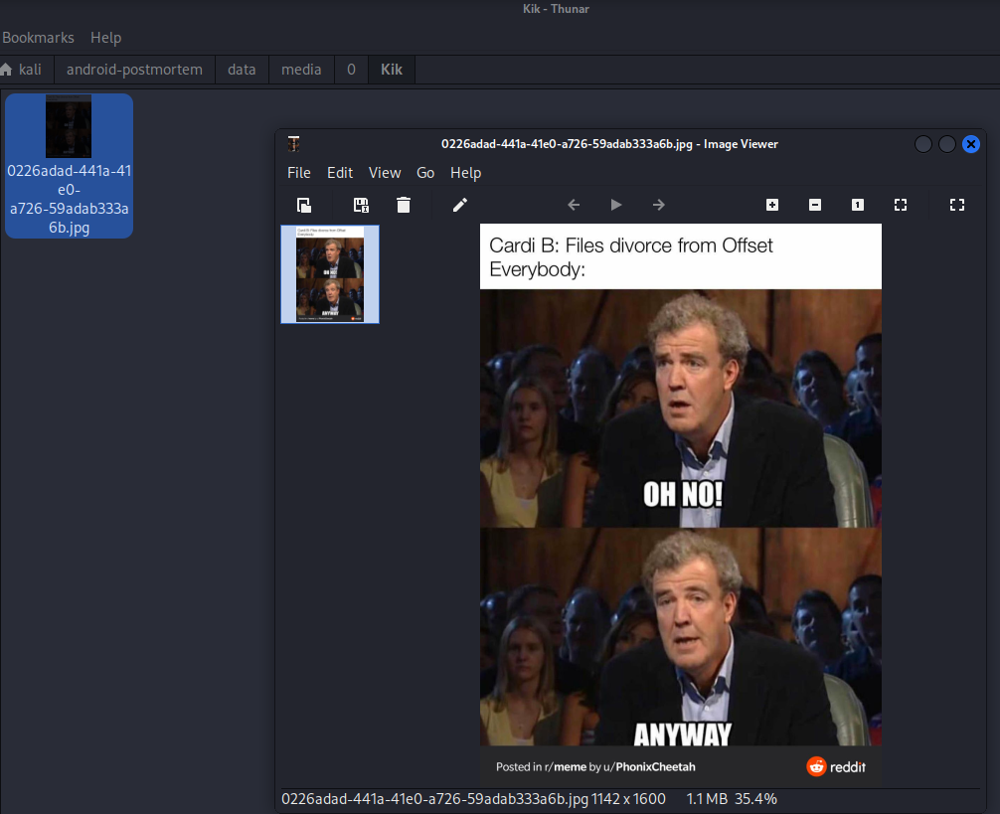
4. Execute the Docker command required to download the image nginx:latest from Docker Hub¶
docker pull nginx:latest

5. Execute the Docker command required to list locally stored images¶
docker image ls

6. Run a container in detached mode using the image nginx:latest¶
docker run -d --name nginx-detached nginx:latest

7. Run a container in interactive mode using the image nginx:latest¶
docker run -it --name nginx-interactive nginx:latest /bin/bash

NOTE: You can exit from the container with exit
8. Execute the Docker command required to list running containers¶
docker ps
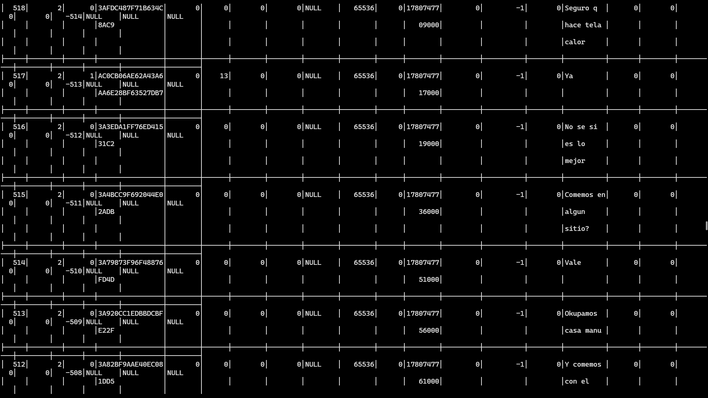
9. Inspect all the properties of one of the containers¶
docker inspect nginx-detached

10. Execute the Docker command required to list the networks configured for Docker¶
docker network ls
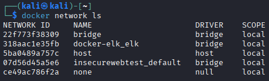
11. Attach the console to one of your containers¶
docker attach nginx-detached
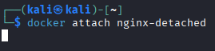
12. Execute a /bin/bash command inside one of your containers in interactive mode¶
docker exec -it nginx-detached /bin/bash
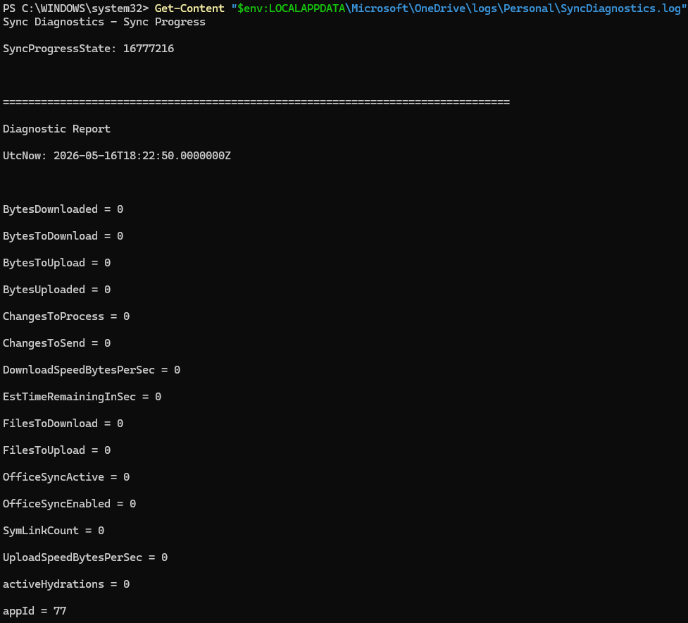
13. Stop one of your containers¶
docker stop nginx-detached
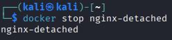
14. Start the previous container again¶
docker start nginx-detached
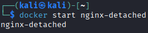
15. Delete one of your containers¶
docker rm -f nginx-detached
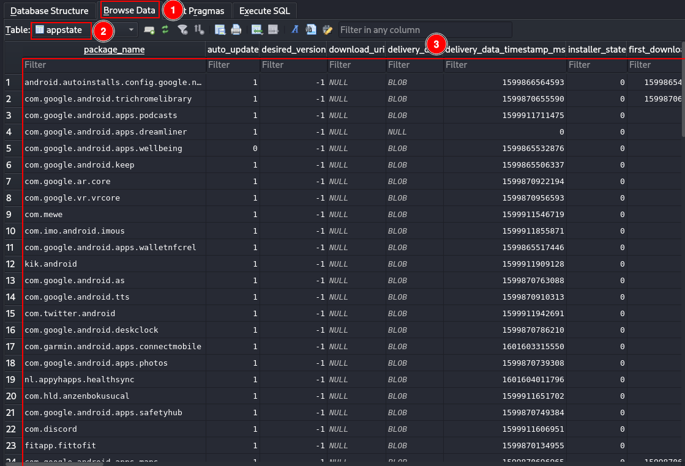
note: the -f parameter is necessaty as the container is starrted, otherwhise we had to stop the conteiner and remove it
16. Create a container from a Dockerfile¶
# Base image
FROM ubuntu
# Copy the file 'script' to the root directory of the container
COPY script /
# Give execute permissions to the file
RUN chmod +x /script
Build the image:
docker build -t myubuntu .
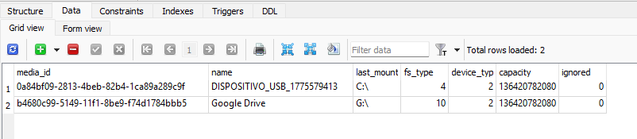
Run the container:
docker run -d --name mycontainer myubuntu
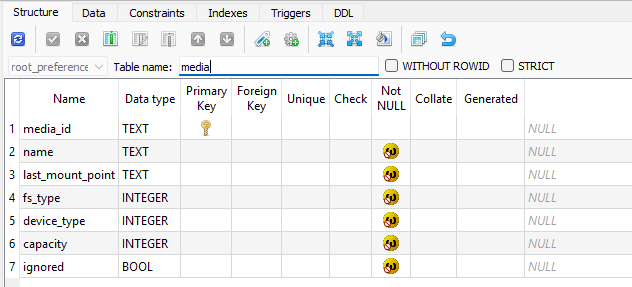
17. Convert the previous container into an image called mydebian¶
docker commit mycontainer mydebian
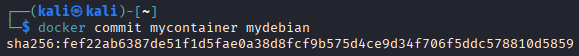
docker image ls
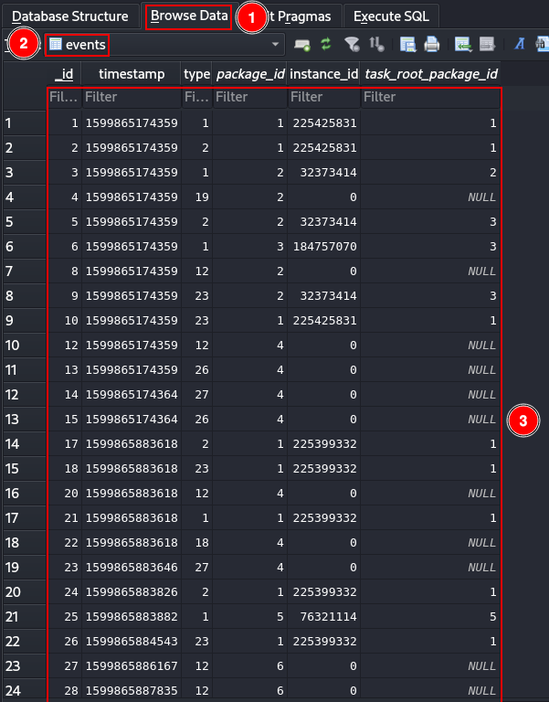
18. Export the image mydebian as a file¶
docker save -o mydebian.tar mydebian

ls mydebian.tar
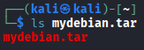
19. Export the nginx container as a file¶
docker export nginx-detached -o nginx-container.tar

ls nginx-container.tar
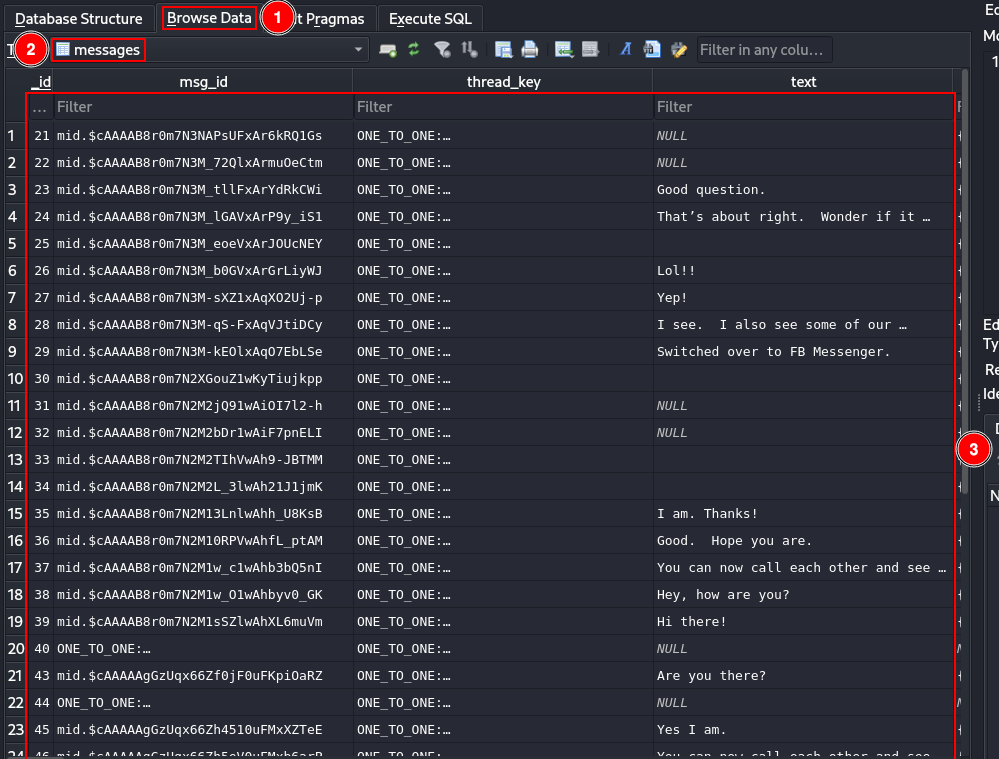
20. Delete one of your containers¶
docker rm -f mycontainer
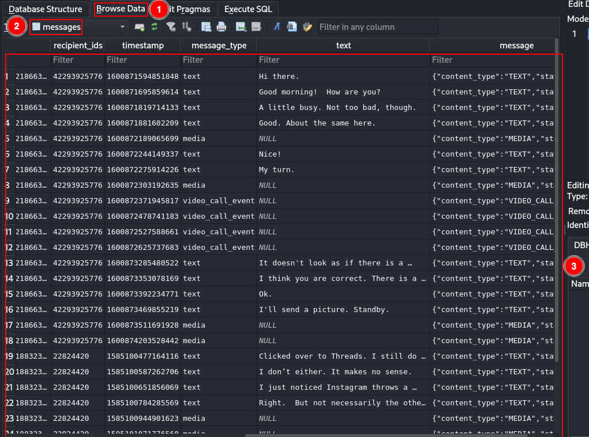
21. Delete the image mydebian¶
docker image rm mydebian
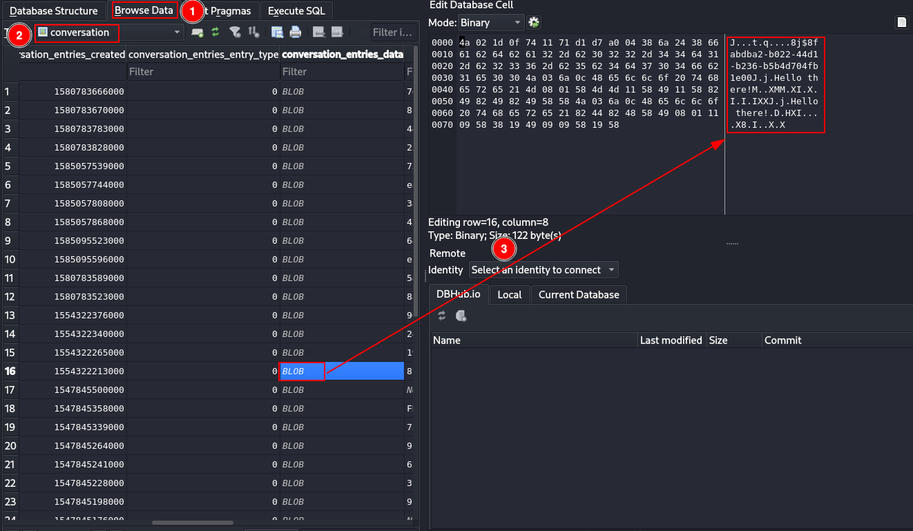
PART B: Docker Forensics¶
1. Read the following article. From a computer forensics perspective, what lessons can we learn regarding evidence acquisition or incident response involving containers?¶
A diferencia de las maquinas virtuales no tenemos opciones como son las snapshot para recolectar evidencias de forma facil y sencilla, sin embargo, si que existen buenas herramientas que podemos utilizar en este contexto, como son:
docker commit: Esto nos sirve para convertir un docker a imagen y capturar las modificaciones de este, lo unico malo es que no guarda el estado de ejecución de los procesos.dd: Puede servirnos para capturar la memoria RAM del docker.
Debido a su propia naturaleza los dockers son efimeros, esto complica reconstruir los eventos que puedan haberse detenido.
Cirtas configuraciones hacen posible que un atacante escape del docker, si vemos indicios de que esto se ha producido, como si el docker se ejecuto con privilegios excesivos, --privileged,--mount o --pid host seria prudente escalar la investicación al host.
2. Read the help documentation for the following Docker command modifiers: DIFF, SAVE, EXPORT, LOAD, and IMPORT. Explain how they may be useful for forensic tasks. Provide examples using each modifier.¶
diff: Muestra los cambios en el docker respecto a su imagen original, esto nos puede ayudar a detectar ficheros modificados por un atacante e identificar malware, incluso de persistencia.
save: Exporta una imagen completa como fichero, esto es muy util, principalmente para mover las evidencias de el dispositivo en el que fueron hayadas al dispositivo en el que seran analizadas.
export: Exporta el sistema de ficheros de un contenedor como fichero .tar. Esto puede ser util para obtener una copia exacta del contenido del contenedor de forma rapida.
load: Importa una imagen previamente guardada en fichero usando docker save, sirve para restaurar imagenes en otro sistema para su analisis.
import: Importa un fichero .tar generado con export y crea una imagen con el.
DIFF¶
docker diff nginx-detached
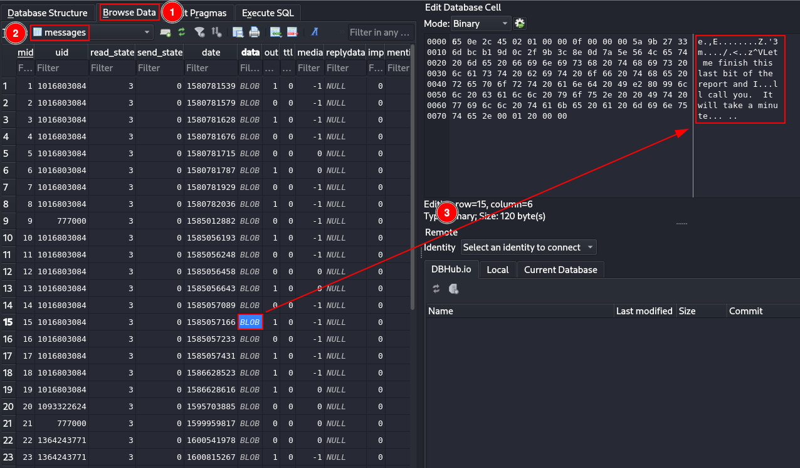
SAVE¶
docker save -o nginx-image.tar nginx:latest
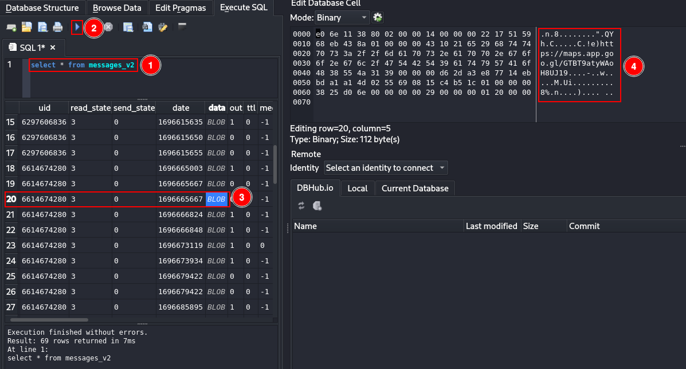
EXPORT¶
docker export nginx-detached -o nginx-container.tar

LOAD¶
docker load -i nginx-image.tar

IMPORT¶
docker import nginx-container.tar imported-nginx

Run the imported image:
docker run -it imported-nginx /bin/bash

3. Review the documentation for the utility docker-diff, which is used to compare local Docker images against those hosted in Docker Hub. Download the utility and perform a test.¶
Install container-diff:
wget https://github.com/GoogleContainerTools/container-diff/releases/download/v0.17.0/container-diff-linux-amd64 -O container-diff
chmod +x container-diff
sudo mv container-diff /usr/local/bin/
Verify installation:
container-diff version
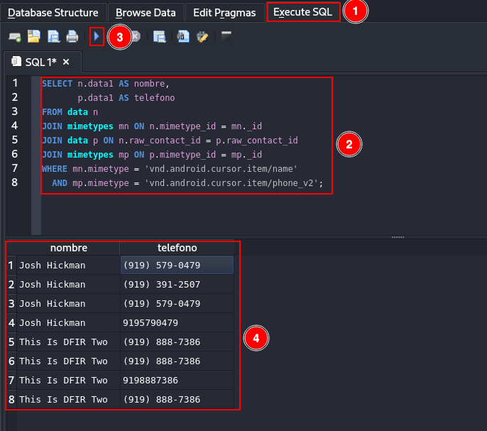
Analyze an image:
container-diff analyze daemon://nginx:latest

Analyze filesystem contents:
container-diff analyze daemon://nginx:latest --type=file

Analyze installed packages:
container-diff analyze daemon://nginx:latest --type=apt

Analyze image history:
container-diff analyze daemon://nginx:latest --type=history

Compare two images:
container-diff diff daemon://nginx:latest daemon://<other-container>

Compare filesystem differences:
container-diff diff daemon://nginx:latest daemon://<other-container> --type=file

Compare installed packages:
container-diff diff daemon://nginx:latest daemon://<other-container> --type=apt

Compare image history:
container-diff diff daemon://nginx:latest daemon://<other-container> --type=history

4. Within the context of an ongoing investigation, a logical image corresponding to a Docker installation from a suspicious computer system has been obtained. It is suspected that this installation may have been used to conceal activities.¶
As a forensic analyst, you have been tasked with performing a thorough analysis of the Docker logical image in order to identify the services being provided.
a. Download a forensic copy of the Docker logical image¶
it has been saved in ~/docker
Install docker-explorer:
python3 -m venv de-env
source de-env/bin/activate
pip install docker-explorer
b. Perform an analysis of the Docker configuration and the containers hosted within the image¶
List all containers:
sudo de-env/bin/de.py -r /var/lib/docker list all_containers

from this json we can get these results:
Image Name |
Container ID |
Image ID |
Start Date |
Mount Points |
Exposed Ports |
Log Path |
|---|---|---|---|---|---|---|
homeassistant/home-assistant:latest |
4ea041fd90ad823353e5a62f395f5ddab3c8096a4cbf1816eb5c4f88169d0818 |
306f9233e149f606d94e7bb3c746cba599b2d3fd3e1080d9d05175daa02f9ae3 |
2023-04-19T15:47:23.510586+00:00 |
var/lib/docker/volumes/ha_vol/_data → /config |
8123/tcp |
/var/lib/docker/containers/4ea041fd90ad823353e5a62f395f5ddab3c8096a4cbf1816eb5c4f88169d0818/4ea041fd90ad823353e5a62f395f5ddab3c8096a4cbf1816eb5c4f88169d0818-json.log |
nextcloud |
5e38912f3093be4e81cedbf8290a084345f81425cd3bc0e6ae940a12fc93aaed |
964325ce9b9519b517f852b8b24e0d0a945edd5521b2eee5e0f94254d67821ee |
2023-04-20T07:51:42.664787+00:00 |
var/lib/docker/volumes/nextcloud/_data → /var/www/html |
80/tcp |
/var/lib/docker/containers/5e38912f3093be4e81cedbf8290a084345f81425cd3bc0e6ae940a12fc93aaed/5e38912f3093be4e81cedbf8290a084345f81425cd3bc0e6ae940a12fc93aaed-json.log |
nginx:latest |
e7cae6335bef239e2b827b717eb442a3b5e7a385d30ac7c03bfb4b6ba337eaf3 |
6efc10a0510f143a90b69dc564a914574973223e88418d65c1f8809e08dc0a1f |
2023-04-20T07:54:41.608245+00:00 |
var/lib/docker/home/azureuser/html → /usr/share/nginx/html |
442/tcp, 80/tcp |
/var/lib/docker/containers/e7cae6335bef239e2b827b717eb442a3b5e7a385d30ac7c03bfb4b6ba337eaf3/e7cae6335bef239e2b827b717eb442a3b5e7a385d30ac7c03bfb4b6ba337eaf3-json.log |
c. You may follow the steps described in this article¶
5. Docker Scout is a collection of features that provides detailed information about the composition and security of container images. It is used to analyze image contents and generate detailed reports about packages and vulnerabilities detected. It can also provide suggestions on how to remediate issues discovered during image analysis. Install Docker Scout and perform a small test.¶
Login to Docker:
docker login

Install Docker Scout:
curl -L https://github.com/docker/scout-cli/releases/download/v1.20.4/docker-scout_1.20.4_linux_amd64.tar.gz -o docker-scout.tar.gz
tar -xzf docker-scout.tar.gz
mkdir -p ~/.docker/cli-plugins
mv docker-scout ~/.docker/cli-plugins/docker-scout
chmod +x ~/.docker/cli-plugins/docker-scout
Verify installation:
docker scout version
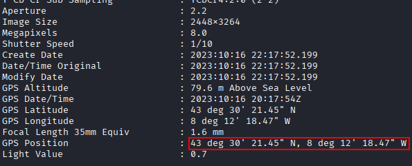
Analyze an image:
docker scout quickview nginx:latest

Detailed CVE analysis:
docker scout cves nginx:latest
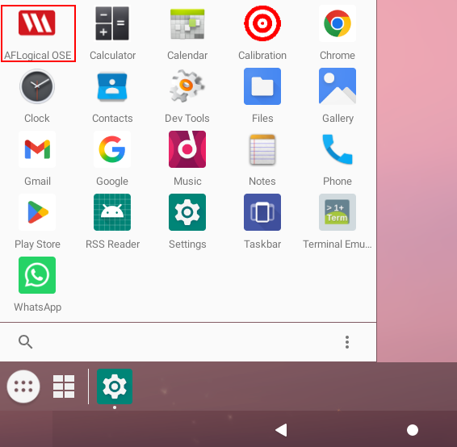
Recommendations:
docker scout recommendations nginx:latest
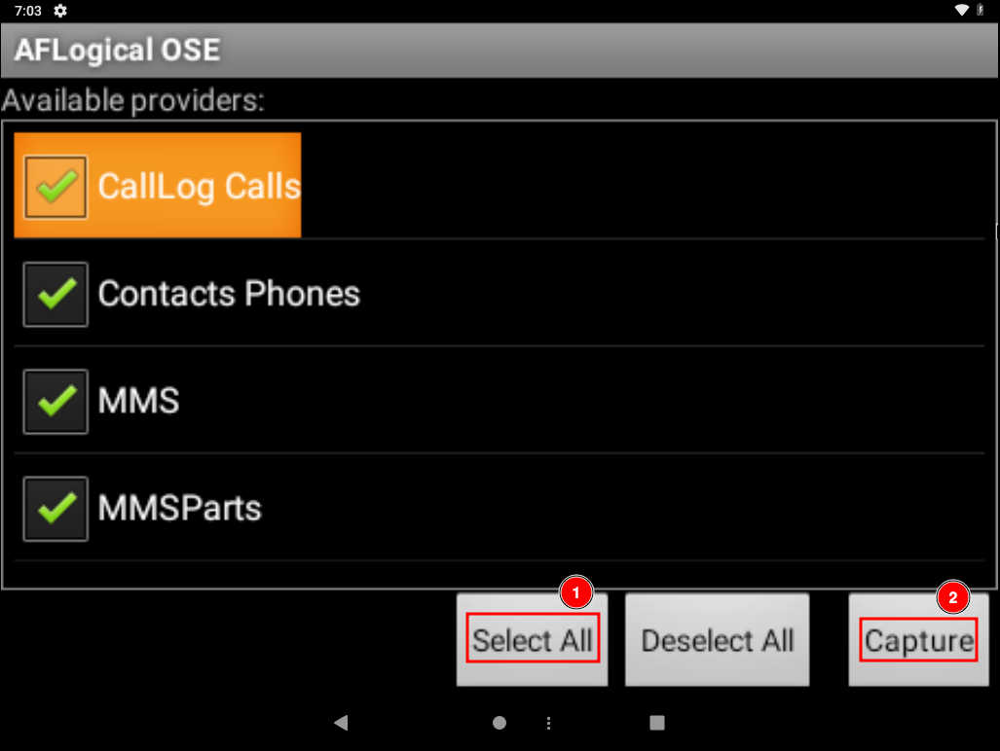
6. Read the following article. From a forensic perspective, what are checkpoints useful for?¶
Los checkpoints de Docker son herramientas fundamentales que permiten capturar el estado de ejecucion completo de un docker en un momento dado, permitiendo asi preservar la memoria volatil y el estado de los procesos en ejecución.
Se podría hacer así, pero es necesario tener las funciones experimentales de docker:
Install CRIU:
sudo apt install criu
Create a checkpoint:
docker checkpoint create nginx-detached checkpoint1
Start the container from the checkpoint:
docker start --checkpoint checkpoint1 nginx-detached
List checkpoints:
ls /var/lib/docker/containers/<container_id>/checkpoints/